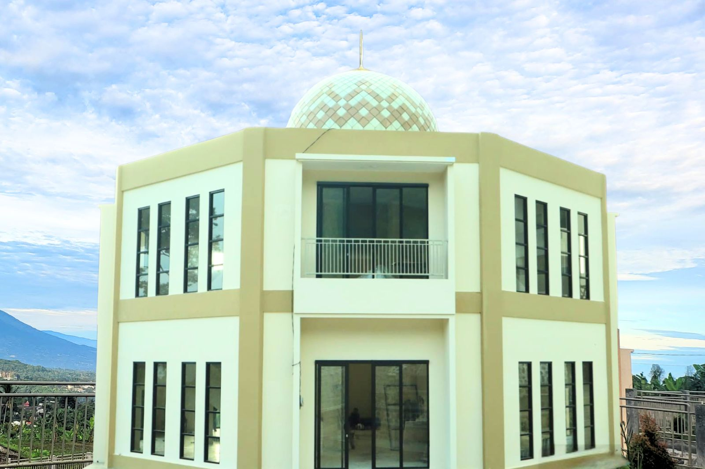

Pondok Pesantren Raudhah Al-Lawadzi'i menyelenggarakan pendidikan Madrasah Tsanawiyah (MTs) dengan memadukan kurikulum Kementerian Agama dan kurikulum kepesantrenan.
Fokus utama pendidikan adalah pembinaan akhlakul karimah, penguatan hafalan Al-Qur’an dengan metode qiroati, serta pemahaman ilmu-ilmu syariat untuk mencetak santri yang hafizh, faqih, dan berprestasi.
SelengkapnyaTerwujudnya generasi Qurani yang berakhlakul karimah, berilmu, mandiri, dan berprestasi dalam bingkai nilai-nilai Islam.
Menyelenggarakan pendidikan Al-Qur’an yang berkualitas dengan metode pembelajaran yang terstruktur.
Membentuk santri yang berakhlakul karimah melalui pembinaan karakter dan keteladanan.
Membekali santri dengan ilmu syariat dan keterampilan hidup agar siap berkontribusi di masyarakat.